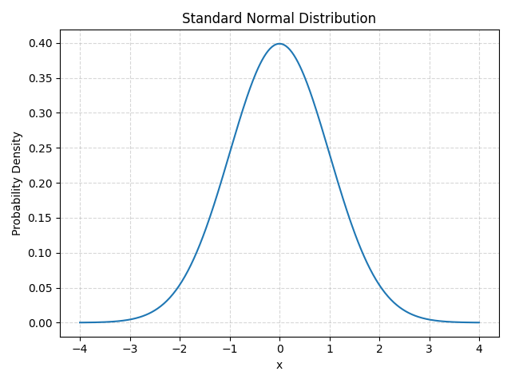

確率論の基礎
確率論は偶然性を数学的に扱うための学問であり、日常の不確実な出来事から科学実験まで幅広く応用されています。ここでは、基本的な概念や代表的な分布、期待値と分散について解説します。
基本概念
確率論では、まず起こり得るすべての結果からなる集合を標本空間と呼び、その部分集合を事象と呼びます。標本空間内の事象にどれだけの確率が割り当てられるかを考えることで、現象の不確実さを数量化します。また、結果に数値を対応させたものを確率変数といいます。
期待値と分散
確率変数 X の期待値は、取る可能性のある値とその確率の積の総和で定義されます。離散的な場合、期待値は E[X] = \sum_i x_i p_i で与えられます。これは変数の平均的な値を表します。
一方、分散は期待値からのばらつきを示し、Var(X) = E[(X-\mu)^2] で定義されます。分散の平方根は標準偏差と呼ばれ、データの散らばり具合を直感的に把握するのに便利です。
代表的な確率分布
統計学ではさまざまな確率分布を用います。例えば、ベル型の曲線で知られる正規分布は、中心極限定理により多くの自然現象の誤差や平均値の分布を表すのに適しています。また、成功・失敗の2値データを扱う二項分布や、ある期間に起こる事象の回数を表すポアソン分布などがあり、大学の統計学の講義では組合せ、確率定義、条件付き確率、二項分布や正規分布など基礎的な概念から学びます。

基礎公式のまとめ
| 概念 | 表現 | 説明 |
|---|---|---|
| 期待値 | E[X] | 確率変数の平均的な値 |
| 分散 | Var(X) = E[(X-\mu)^2] | ばらつきの指標 |
| 正規分布 | \(f(x)=\frac{1}{\sqrt{2\pi}\sigma}e^{-\frac{(x-\mu)^2}{2\sigma^2}}\) | 平均\(\mu\)、分散\(\sigma^2\) をもつ連続分布 |
| 二項分布 | \(P(X=k)=\binom{n}{k}p^k(1-p)^{n-k}\) | 成功回数\(k\)の確率。試行回数\(n\)、成功確率\(p\)。 |
| ポアソン分布 | \(P(X=k)=\frac{\lambda^k e^{-\lambda}}{k!}\) | 単位時間内の事象発生回数。平均発生率\(\lambda\)。 |
これらの基礎概念を理解することで、より発展的な統計手法へと進む準備が整います。